Percepción Sensorial
Estimular los sentidos (tacto, vista, oído, olfato y gusto) y mejorar la conciencia corporal y espacial del alumno.
“La enseñanza que deja huella no es la que se hace de cabeza a cabeza, sino de corazón a corazón”
Proyecto de Innovación Educativa (Convocatoria 2024-25) enfocado en la Estimulación Basal y el desarrollo del Aula Multisensorial como entornos abiertos, inclusivos y adaptados para dar una respuesta educativa de calidad al alumnado con Necesidades Educativas Especiales (NEE/TEA).
01 · Fundamentación
Nuestro centro está considerado por la Consejería de Educación como Centro de Actuación Preferente desde 1990. Contamos con dos Aulas de Educación Especial con alumnado que presenta Necesidades Educativas Especiales (NEE), mayoritariamente con diagnóstico de Trastorno del Espectro Autista (TEA) y plurideficiencias.
La estimulación basal es un enfoque terapéutico y pedagógico que busca favorecer el desarrollo global de las personas con dificultades motoras, sensoriales o cognitivas a través de la activación de sus sentidos y la interacción armónica con el entorno, mejorando su percepción y calidad de vida.
Buscamos consolidar una escuela verdaderamente inclusiva. Al adaptar y equipar nuestro nuevo espacio (el **Aula Multisensorial**) y complementar la labor docente con **hidroterapia**, creamos un entorno naturalizado, flexible y abierto que despierta el interés y el bienestar de los alumnos.
02 · Objetivos
Alineados con el marco del Diseño Universal para el Aprendizaje (DUA) y adaptados a las necesidades individuales de cada alumno.
Estimular los sentidos (tacto, vista, oído, olfato y gusto) y mejorar la conciencia corporal y espacial del alumno.
Facilitar la expresión de emociones y necesidades, favoreciendo la comunicación no verbal en personas con dificultades lingüísticas.
Fomentar la toma de decisiones dentro de sus posibilidades y aumentar su capacidad de reacción proactiva ante estímulos.
Estimular el desarrollo motor de los alumnos, favoreciendo el control postural, la movilidad y la coordinación de extremidades.
Reducir la ansiedad y el estrés proporcionando bienestar emocional mediante estímulos placenteros y seguros en el entorno.
Fomentar la evocación de experiencias pasadas mediante estímulos sensoriales significativos y personalizados.
03 · Áreas de Desarrollo
Estructurados para abordar las destrezas básicas y habilidades esenciales del alumnado con necesidades especiales.
Se busca activar y mejorar la percepción mediante actividades de:
Se enfoca en potenciar la movilidad y el bienestar físico general:
Promueve la apertura del alumno hacia los demás y la comunicación afectiva:
Garantiza la seguridad psicológica y fomenta la iniciativa del alumno:
04 · Actuaciones
Filtra las actuaciones del proyecto para conocer en detalle cómo se traduce la estimulación en el día a día.
Espacio equipado con fibras ópticas, columnas de burbujas y luces regulables para la inmersión de sentidos.
Sesiones de hidroterapia que logran importantes avances psíquicos, físicos y sociales en un medio ingrávido.
Contacto y manipulación guiada de materiales como arena, arroz, espuma, plastilina y temperaturas de agua.
Balanceo suave en hamacas, columpios específicos y pelotas de fisioterapia para control del equilibrio.
Relajación profunda mediante masajes suaves con aceites esenciales e iluminación ambiental tenue.
Uso de mantas y cojines pesados que aplican presión profunda propioceptiva para la calma emocional.
Manipulación segura de cortinas y tiras de fibra óptica multisensorial que cambian de color de forma táctil.
Coordinación estrecha entre maestras de PT/AL y profesionales del entorno para una hidroterapia integral.
Juegos interactivos frente al espejo enfocados en propiciar contacto visual, sonrisas y gestos afectivos.
05 · Evidencias Reales
Imágenes de nuestro alumnado interactuando en las aulas específicas, experimentando la estimulación basal y participando en su propio camino de aprendizaje.
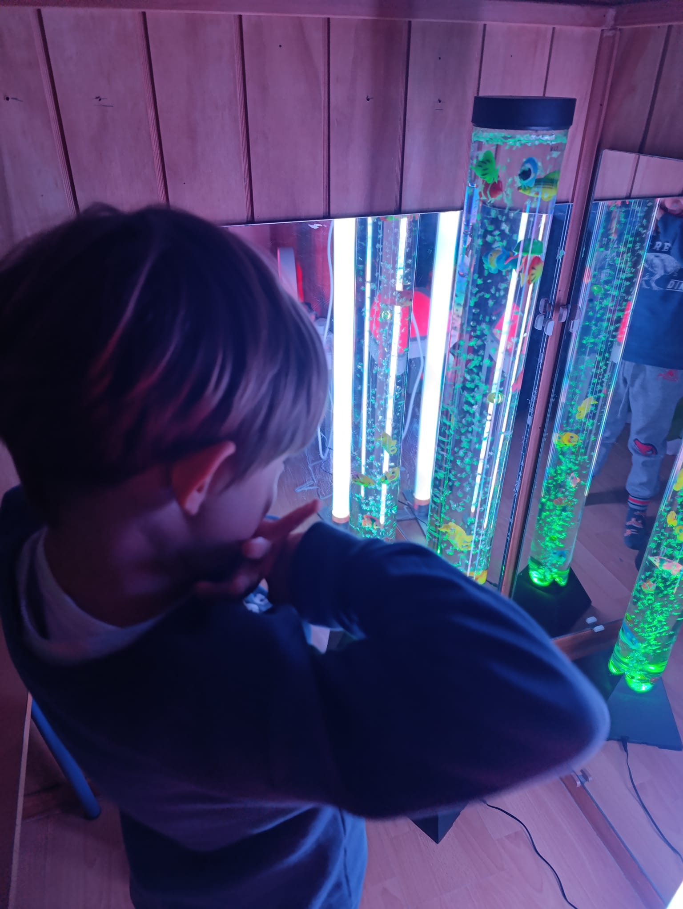
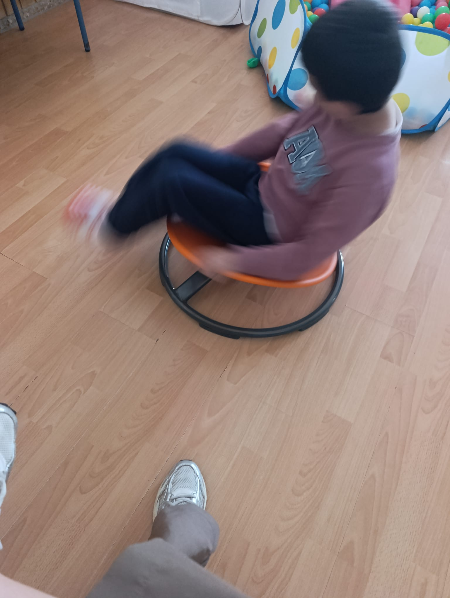
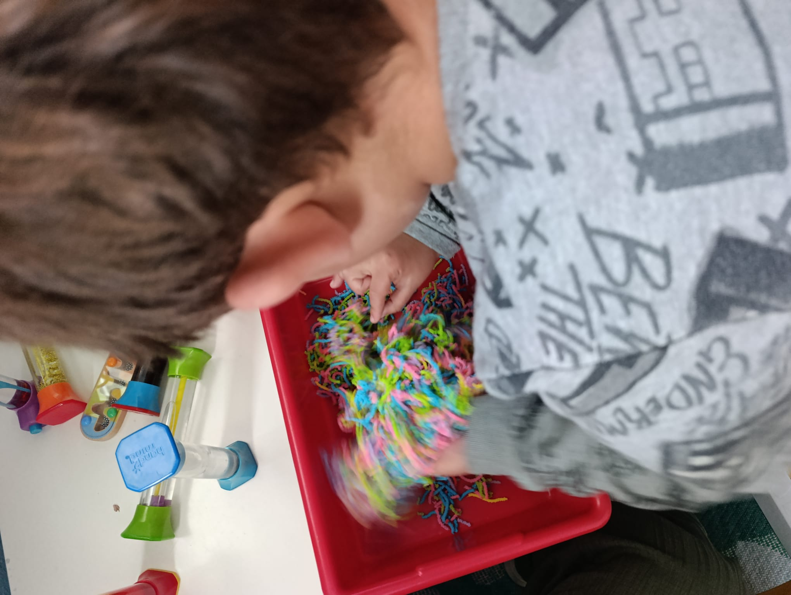
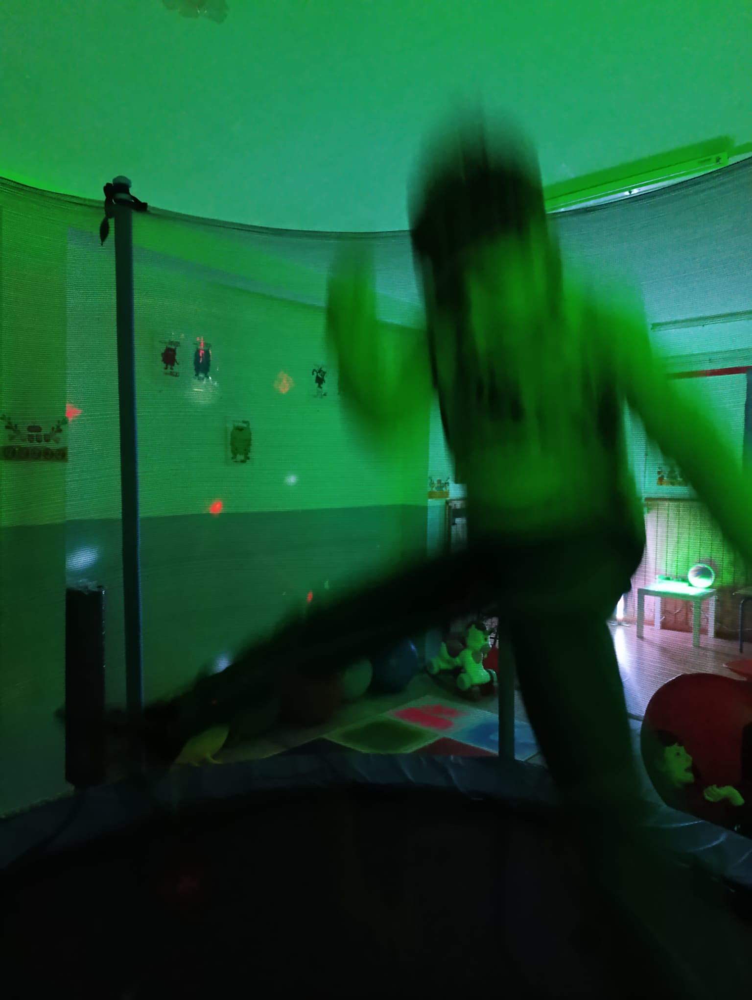
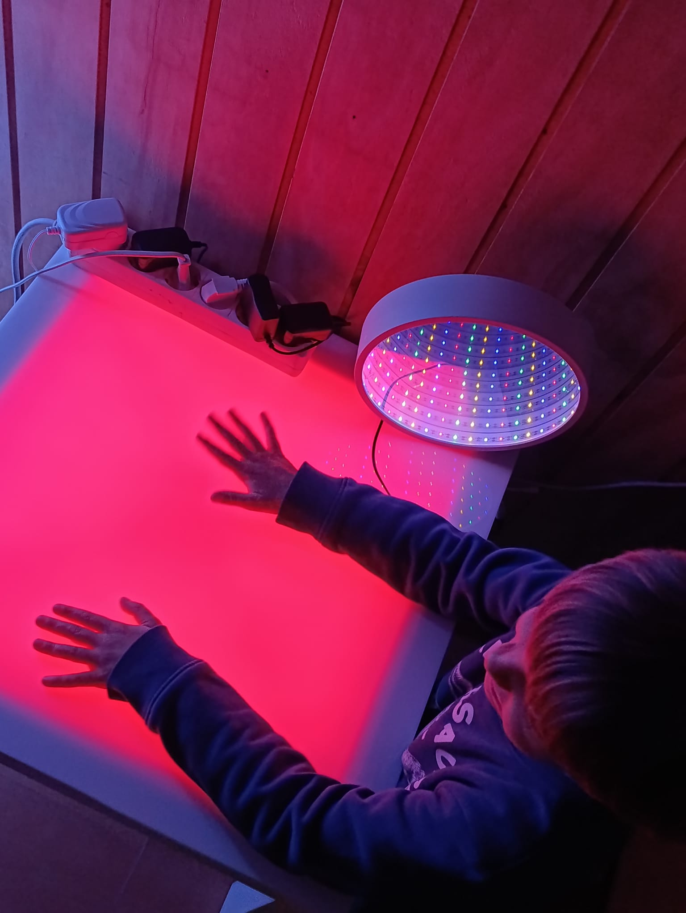
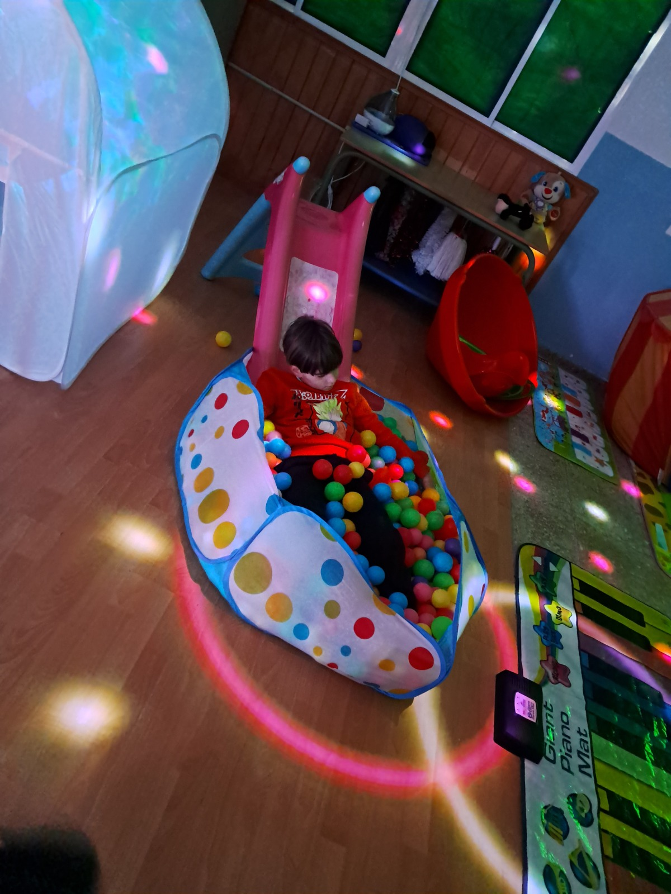
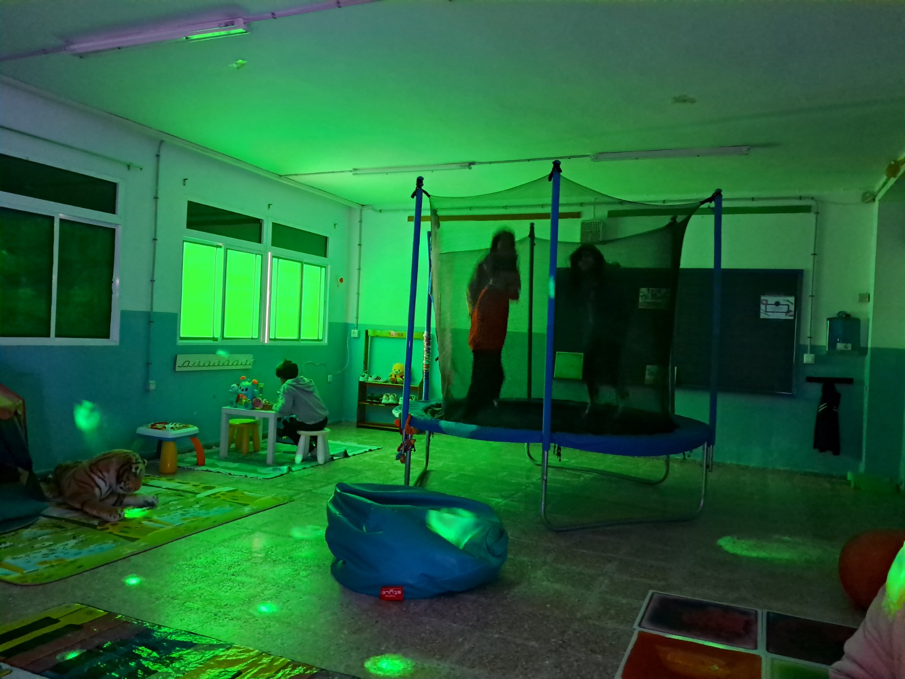
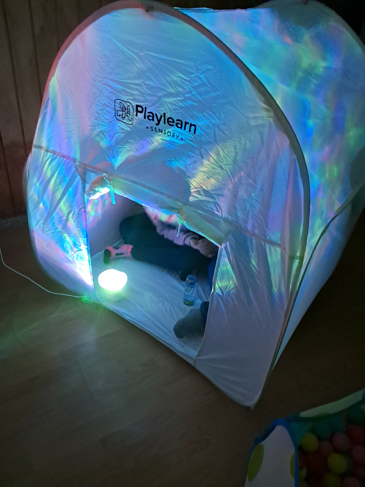
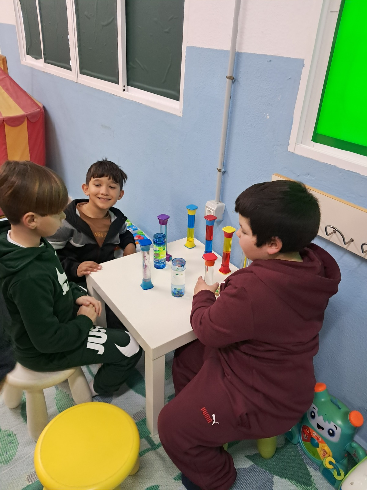
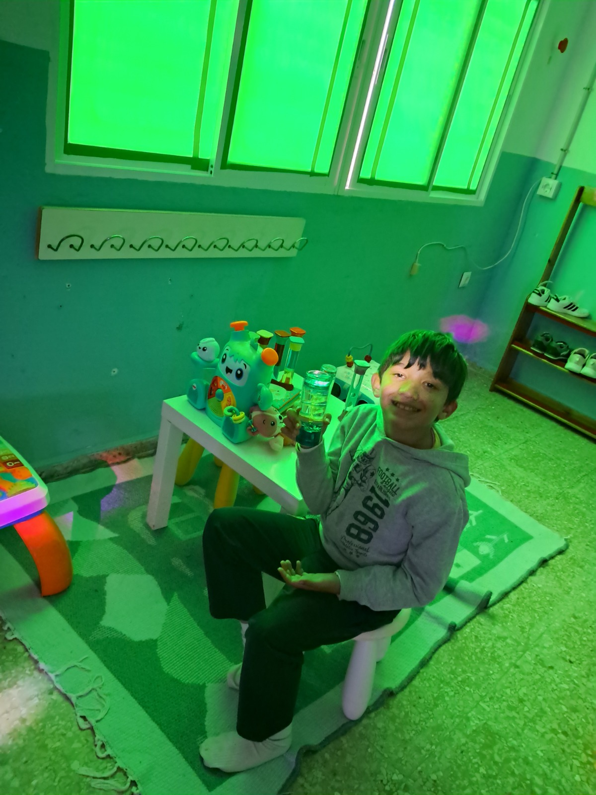
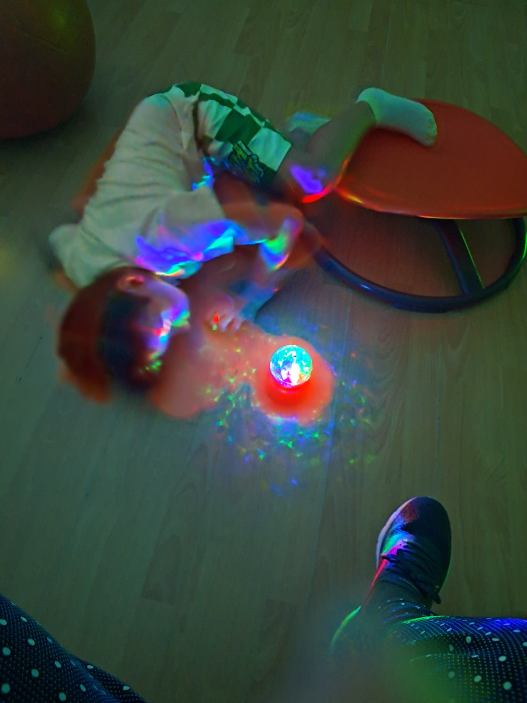
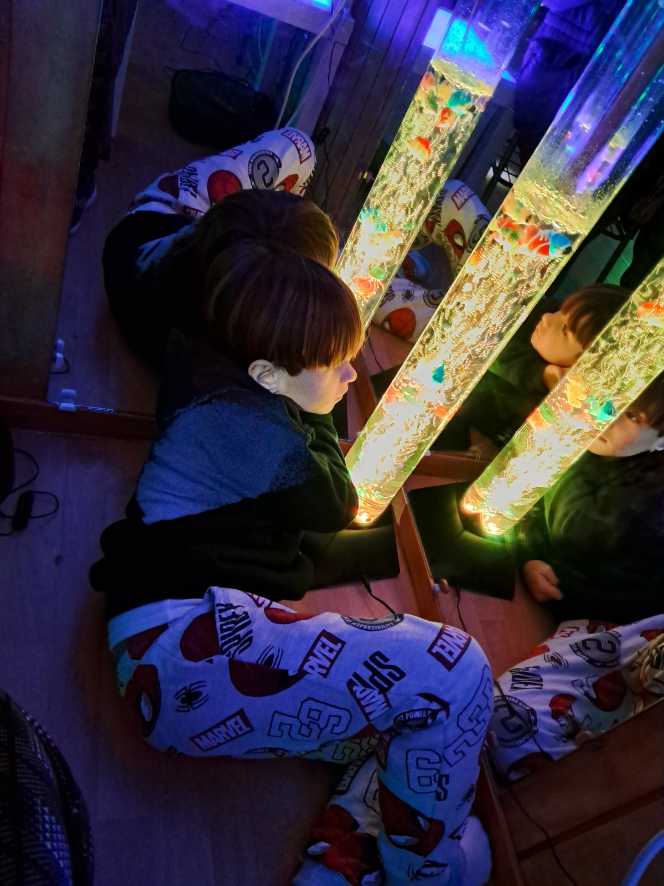
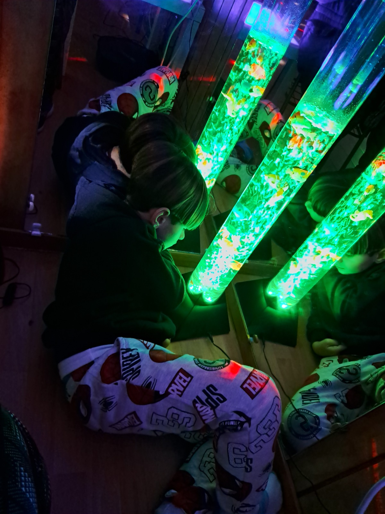
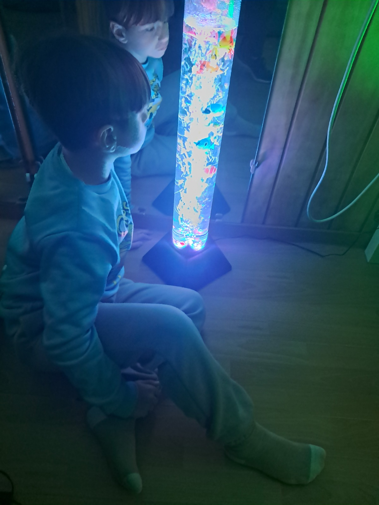
06 · Evaluación
La evaluación se plantea como un proceso continuo y sistemático a través de rúbricas y observación directa e individualizada de cada alumno participante.
Registramos avances concretos en la respuesta a estímulos sensoriales, el control postural, la iniciativa en la comunicación no verbal y la reducción de signos de ansiedad o estrés.
Puedes descargar y revisar el documento PDF oficial del proyecto de innovación educativa “El cole marca nuestro camino”, presentado ante la Consejería de Desarrollo Educativo y Formación Profesional de la Junta de Andalucía.